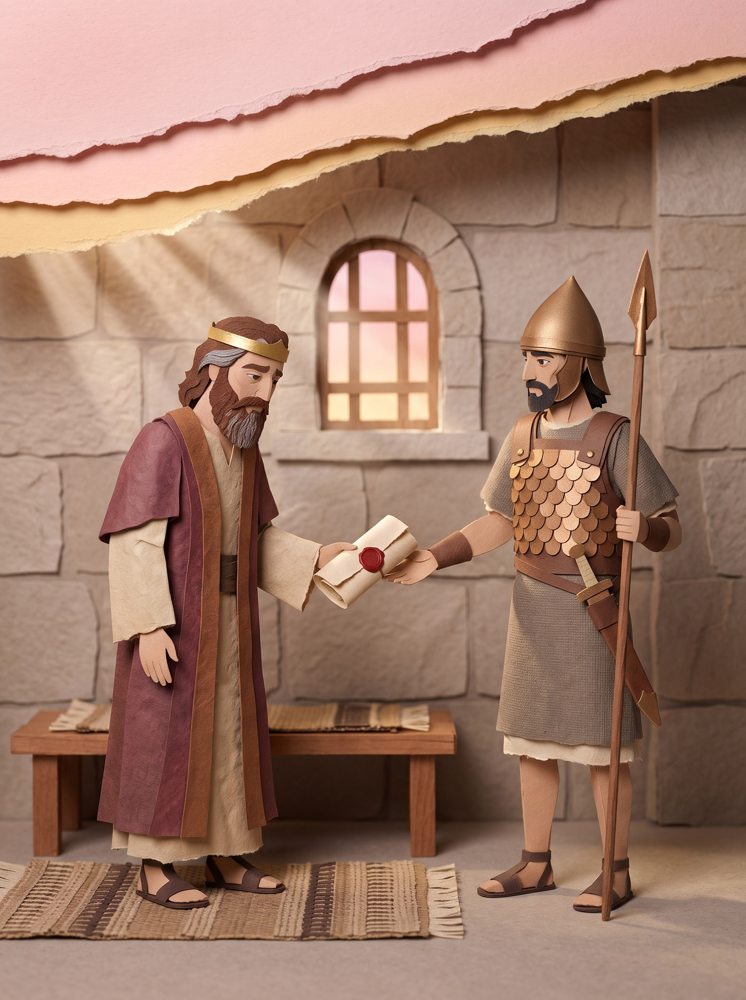
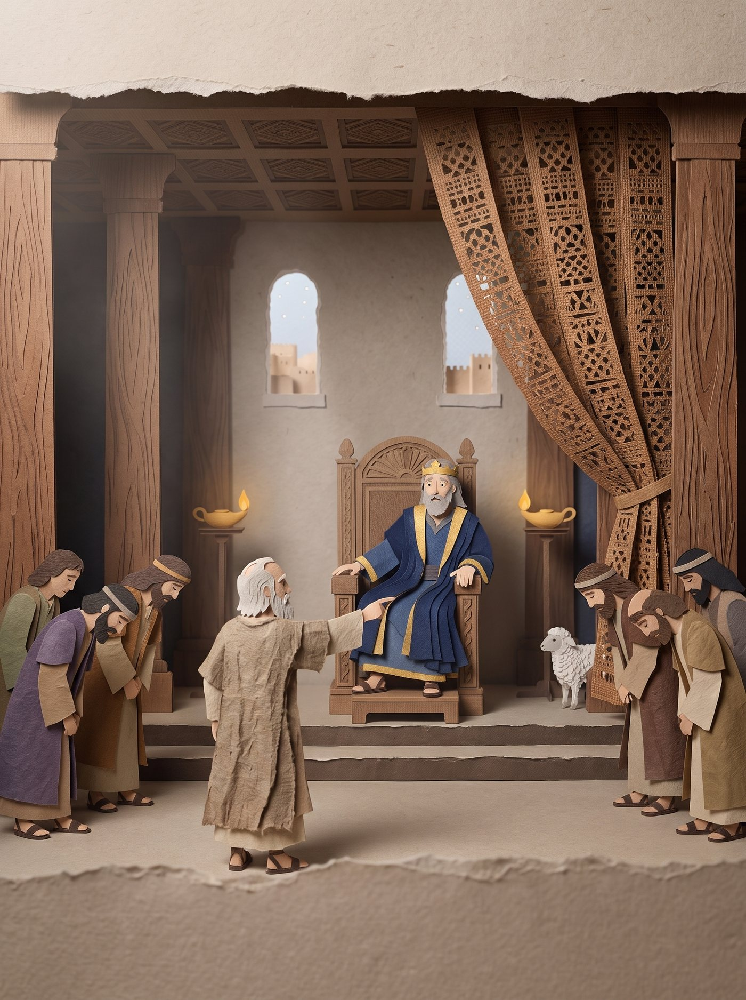
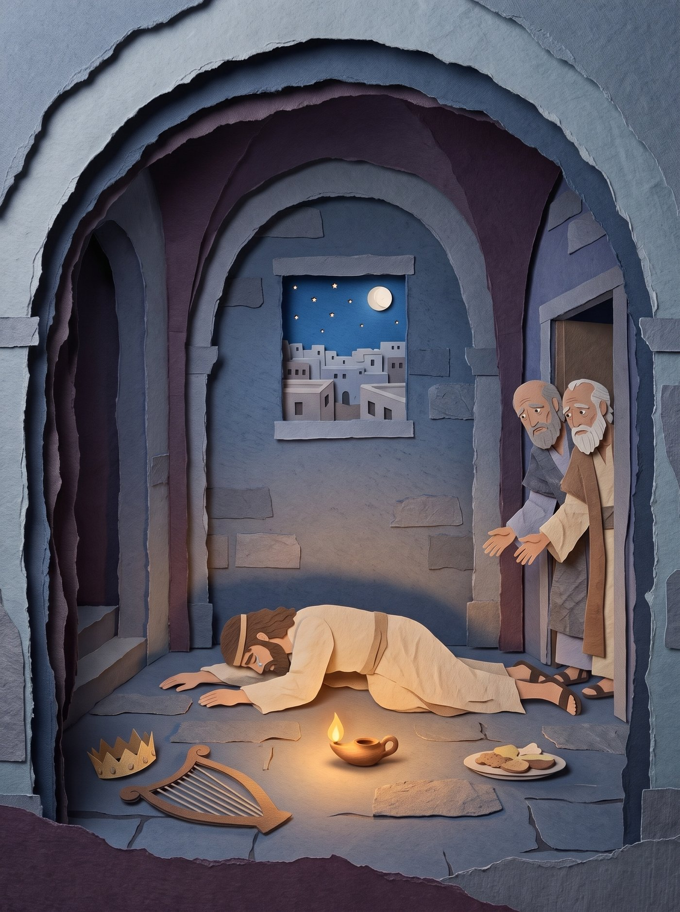

Capítulo 6
David: el rey que cayó y se levantó
Parte I: la promesa · 1 y 2 Samuel; Salmos 23, 32, 51 y 22
La escena
Recreación: así pudo haber sido. Los hechos están en 1 y 2 Samuel y en los Salmos. Lo que pensaban y sentían se imagina a partir del texto y de lo que se sabe de la época.
El menor, el que cuida las ovejas
Israel por fin tiene rey. El pueblo lo pidió, cansado de los tiempos de los jueces, y el primer rey fue Saúl: alto, buen mozo, una cabeza más alto que todos. Pero Saúl empezó bien y terminó mal. Desobedeció a Dios, se llenó de celos y de miedo, y Dios lo desechó.
Entonces Dios le dice al profeta Samuel que llene su cuerno de aceite y que vaya a Belén. A la casa de un hombre llamado Isaí. Uno de sus hijos va a ser el nuevo rey.
Belén. La casa del pan. El pueblo de Booz y de Rut. Isaí es su nieto.
Samuel llega, y la gente del pueblo tiembla, porque cuando el profeta aparece sin avisar es que algo grave pasa. Samuel los tranquiliza, prepara un sacrificio, y le pide a Isaí que le presente a sus hijos.
Entra el mayor, Eliab. Alto, fuerte, de buena presencia. Y Samuel piensa: este es. Seguro que este es.
Y Dios le dice que no.
«Jehová no mira lo que mira el hombre; pues el hombre mira lo que está delante de sus ojos, pero Jehová mira el corazón» (1 S 16:7).
Pasa el segundo. Tampoco. El tercero. Tampoco. Siete hijos pasan delante del profeta, y de ninguno dice Dios: este es. Samuel, confundido, le pregunta a Isaí si esos son todos sus hijos.
Y el padre contesta, casi con vergüenza: «Queda aún el menor, que apacienta las ovejas» (1 S 16:11).
Al menor ni lo llamaron. Nadie pensó que valiera la pena traerlo del campo para algo importante. Estaba afuera, con el rebaño, como siempre.
Samuel dice que nadie se sienta a la mesa hasta que llegue. Y mandan a buscarlo. Entra un muchacho todavía con olor a oveja, rojizo, de ojos bonitos, sin entender por qué lo llamaron. Y Dios le dice a Samuel:
«Levántate y úngelo, porque este es» (1 S 16:12).
Samuel le derrama el aceite en la cabeza, ahí, en medio de sus hermanos mayores. Y desde ese día, dice la Biblia, el Espíritu de Dios vino sobre David.
Cinco piedras del arroyo
Pasa un tiempo. David sigue cuidando ovejas, aunque ya está ungido. Y un día su padre lo manda al frente de batalla, al valle de Elá, a llevarles pan y queso a sus hermanos, que están en el ejército de Saúl.
Llega. Y ve algo que lo deja indignado.
En un cerro están los filisteos; en el otro, Israel; en medio, el valle. Y cada mañana y cada tarde, durante cuarenta días, baja al valle un guerrero filisteo de la ciudad de Gat, un gigante llamado Goliat, con casco de bronce, una cota de malla que pesa como un hombre y una lanza enorme. Y grita que le manden a alguien para pelear con él.
Y nadie baja. Ni siquiera el rey Saúl, el más alto de Israel. Todo el ejército tiene miedo.
David escucha los gritos, y pregunta quién es ese filisteo para provocar «a los escuadrones del Dios viviente» (1 S 17:26). Su hermano mayor lo regaña, le dice que es un insolente, que vino a mirar la batalla. Pero las palabras de David llegan hasta Saúl, y el rey lo manda a llamar.
Saúl lo mira y le dice que no puede, que es un muchacho y el otro es un guerrero desde su juventud. Y David le cuenta lo que aprendió con las ovejas: que cuando venía un león o un oso y se llevaba un cordero del rebaño, él salía detrás, lo golpeaba y le sacaba el cordero de la boca. Un pastor de verdad no deja que se le lleven un cordero.
Saúl le presta su armadura, pero a David le queda enorme. Se la quita. Toma su cayado, su honda, y baja al arroyo. Escoge cinco piedras lisas. Las pone en su bolsa de pastor. Y camina hacia el gigante.
Goliat lo ve venir y se ríe. Lo maldice por sus dioses. Y David, en medio del valle, le contesta:
«Tú vienes a mí con espada y lanza y jabalina; mas yo vengo a ti en el nombre de Jehová de los ejércitos, el Dios de los escuadrones de Israel, a quien tú has provocado» (1 S 17:45).
Una piedra. Una sola. Gira la honda, la suelta, y la piedra se le clava al gigante en la frente. Goliat cae de cara al suelo.
Ese día, el muchacho de las ovejas se convierte en el héroe de Israel. Y ahí empiezan sus problemas.
Años de huida
Las mujeres salen a cantar que Saúl mató a sus miles, y David a sus diez miles. Y a Saúl se le mete el veneno de los celos. Dos veces le tira una lanza a David mientras él toca el arpa para calmarlo. Lo persigue por los desiertos. David pasa años escondido en cuevas, en las montañas de Judá, en tierra de los filisteos, con un grupo de hombres endeudados y amargados que se le van uniendo.
Dos veces tiene a Saúl en sus manos y lo podría matar. Y no lo hace. Dice que no va a levantar la mano contra el ungido de Dios. Espera.
En esos años de cuevas y de miedo, David escribe canciones. Y una de ellas es la más conocida del mundo, la que se recita en los hospitales y en los funerales, la que se aprenden los niños:
«Jehová es mi pastor; nada me faltará» (Sal 23:1).
Lo escribe un pastor. Un hombre que sabía lo que era cuidar ovejas de noche, buscarles pasto y agua, defenderlas de las fieras. Y que en sus peores años, perseguido, se sintió así: como una oveja a la que Dios cuida.
El rey en Jerusalén
Saúl muere en batalla. Y David, a los treinta años, es coronado rey. Primero de Judá, en Hebrón. Después de todo Israel.
Conquista una fortaleza cananea en lo alto de un cerro, que nadie había podido tomar: Jebús. La convierte en su capital y le pone un nombre que todavía conocemos: Jerusalén, la ciudad de David. Lleva allí el arca de Dios, y entra delante de ella danzando con todas sus fuerzas, como un niño, sin importarle lo que digan.
Y un día, ya instalado en su palacio de cedro, David siente vergüenza: él vive en una casa de lujo y el arca de Dios está en una tienda. Quiere construirle a Dios un templo.
Y Dios le responde, por medio del profeta Natán, con una sorpresa. No vas a ser tú el que me construya una casa a mí. Yo te voy a construir una casa a ti. Una familia. Una dinastía. Y le hace una promesa que va a sostener a Israel durante mil años de oscuridad:
«Y será afirmada tu casa y tu reino para siempre delante de tu rostro, y tu trono será estable eternamente» (2 S 7:16).
Para siempre. Eternamente. David no entiende del todo lo que le prometen. Se sienta delante de Dios y le pregunta quién es él, y qué es su casa, para que Dios lo haya traído hasta aquí. El muchacho de las ovejas, con una promesa eterna en las manos.
Todo va bien. Demasiado bien.
Una tarde en el terrado
«Aconteció al año siguiente, en el tiempo que salen los reyes a la guerra, que David envió a Joab, y con él a sus siervos y a todo Israel, y destruyeron a los amonitas, y sitiaron a Rabá; pero David se quedó en Jerusalén» (2 S 11:1).
Pero David se quedó.
Es primavera, el tiempo en que los reyes salen a la guerra. Y el rey no sale. Manda a otros. Se queda en casa.
Una tarde se levanta de la cama, aburrido, y se pone a caminar por la azotea del palacio. Desde ahí arriba se ven los patios de las casas de abajo. Y ve a una mujer que se está bañando. Es muy hermosa.
Pregunta quién es. Y le contestan con una frase que debió haberlo detenido en seco: «Aquella es Betsabé hija de Eliam, mujer de Urías heteo» (2 S 11:3).
Mujer de Urías. Casada. Y su marido no es un desconocido: es uno de los guerreros más leales de David, uno de sus valientes, que en ese momento está en el frente de batalla peleando por él.
David lo sabe. Y aun así la manda a buscar.
La Biblia lo cuenta en una sola línea seca: envió mensajeros, la tomó, durmió con ella, y ella volvió a su casa. No hay una palabra de ella. Es el rey el que manda, y nadie le dice que no a un rey. Y unas semanas después, llega un mensaje al palacio. Dos palabras:
«Estoy encinta» (2 S 11:5).
La carta
Y aquí David, el hombre conforme al corazón de Dios, empieza a hundirse cada vez más hondo para tapar lo que hizo.
Manda traer a Urías del frente. Lo recibe con amabilidad, le pregunta cómo va la guerra, y le dice que baje a su casa a descansar, a lavarse los pies. Le manda un regalo de la mesa real. La idea es simple: que Urías duerma con su esposa, y que el niño parezca suyo.
Pero Urías no va a su casa. Duerme a la puerta del palacio, en el suelo, con los guardias. Y cuando David le pregunta por qué, Urías le contesta con una lealtad que le debió quemar al rey por dentro:
«El arca e Israel y Judá están bajo tiendas, y mi señor Joab, y los siervos de mi señor, en el campo; ¿y había yo de entrar en mi casa para comer y beber, y a dormir con mi mujer?» (2 S 11:11).
Un extranjero, un hitita, más fiel a Israel que el rey de Israel.
David lo intenta otra vez. Lo invita a comer y lo emborracha. Y Urías, borracho y todo, vuelve a dormir a la puerta con los guardias.
Entonces David hace lo peor. A la mañana escribe una carta a Joab, su general. La sella. Y se la entrega a Urías para que él mismo la lleve.

Urías camina de vuelta al frente llevando en la mano su propia sentencia de muerte. Leal hasta el final. Y la carta dice:
«Poned a Urías al frente, en lo más recio de la batalla, y retiraos de él, para que sea herido y muera» (2 S 11:15).
Joab obedece. Urías muere en un ataque a la muralla de Rabá, junto con otros soldados. Llega el mensajero con la noticia, y David responde con una frialdad que asusta: que no se preocupe Joab, que la espada mata a unos y a otros.
Betsabé hace luto por su marido. Y cuando pasa el luto, David la trae al palacio y se casa con ella. Nace el niño. Todo parece arreglado. Nadie dice nada.
Pero la Biblia cierra el capítulo con una frase que lo cambia todo:
«Mas esto que David había hecho, fue desagradable ante los ojos de Jehová» (2 S 11:27).
Su lucha. David no cae de golpe. Va bajando, un escalón detrás de otro. Primero se queda en casa cuando debía estar con su gente. Después mira. Después pregunta. Después manda a buscarla, aun sabiendo que es casada. Después miente. Después emborracha a un hombre leal. Después lo manda a matar. Y después se calla. Durante meses vive como si nada, mientras su conciencia lo va comiendo por dentro. Él mismo lo contará después, en un salmo: «Mientras callé, se envejecieron mis huesos en mi gemir todo el día» (Sal 32:3). El gran rey, el que mató al gigante, el que escribió «Jehová es mi pastor», derrotado por su propio deseo y por el poder de hacer lo que quería sin que nadie lo detuviera. Es la lucha de cualquier persona que tiene poder sobre otros, y de cualquier persona que alguna vez quiso tapar un pecado con otro pecado.
Tú eres aquel hombre
Dios no deja a David en su silencio. Le manda a Natán.
Natán no llega acusando. Llega contando una historia, como si le trajera al rey un caso para juzgar. En una ciudad había dos hombres, uno rico y otro pobre. El rico tenía muchísimas ovejas y vacas. El pobre no tenía más que una corderita que había comprado y criado. La corderita creció con él y con sus hijos, comía de su pan, bebía de su vaso, dormía en su pecho, «y la tenía como a una hija» (2 S 12:3).
Un día le llegó una visita al rico. Y el rico, para no tocar sus propias ovejas, le quitó la corderita al pobre, la mató y se la sirvió a su invitado.
David, el pastor, el que salía detrás del león para salvar un cordero, se enfurece. Se le enciende la sangre. Grita que el que hizo eso merece la muerte, que tiene que pagar cuatro veces la corderita, porque no tuvo misericordia.
Y Natán lo mira a los ojos y le dice cuatro palabras:
«Tú eres aquel hombre» (2 S 12:7).

Silencio en el salón del trono.
Natán sigue, con la voz de Dios: yo te ungí, yo te libré de Saúl, yo te di todo, y si eso era poco te hubiera dado más. ¿Por qué despreciaste mi palabra? A Urías lo mataste con la espada de los amonitas, y tomaste a su mujer.
David tenía el poder para hacer callar a Natán. Para echarlo, para matarlo, como mató a Urías. Cualquier otro rey de la época lo hubiera hecho. Pero David no se defiende. No se justifica. No le echa la culpa a Betsabé ni a Joab ni a las circunstancias. Dice dos palabras:
«Pequé contra Jehová. Y Natán dijo a David: También Jehová ha remitido tu pecado; no morirás» (2 S 12:13).
Pequé. Y en ese mismo instante, la respuesta: Dios ha quitado tu pecado. No hay una pausa. No hay un periodo de prueba. El perdón llega en la siguiente línea.
Pero el perdón no borra las consecuencias. Natán le anuncia que el niño que nació va a morir, y que la espada no se va a apartar nunca de su casa. Y así fue.
Siete días en el suelo
El niño se enferma. Y David hace algo que conmueve: se tira al suelo. Ayuna. Pasa las noches acostado en la tierra, rogándole a Dios por el bebé. Los ancianos de su casa tratan de levantarlo, y no quiere. No come. No se cambia de ropa.

Al séptimo día el niño muere. Los siervos tienen miedo de decírselo; si así estaba cuando el niño vivía, ¿qué va a hacer ahora? Pero David los ve cuchichear y entiende. Pregunta si el niño murió. Le dicen que sí.
Y David se levanta del suelo. Se lava, se perfuma, se cambia de ropa. Va a la casa de Dios a adorar. Y después pide que le sirvan de comer. Sus siervos no entienden. Y él les explica que mientras el niño vivía, ayunaba y lloraba pensando que quizás Dios tendría compasión. Pero ahora ya no puede hacerlo volver: «Yo voy a él, mas él no volverá a mí» (2 S 12:23).
Después consuela a Betsabé. Y les nace otro hijo, Salomón. Y la Biblia dice algo precioso: que Dios lo amó.
El resto de la vida de David no es fácil. La espada no se aparta de su casa. Sus propios hijos se hieren entre ellos. Su hijo Absalón se rebela contra él y lo saca de Jerusalén. Y cuando Absalón muere en la guerra, David sube a una sala sobre la puerta de la ciudad y llora como nunca había llorado:
«¡Hijo mío Absalón, hijo mío, hijo mío Absalón! ¡Quién me diera que muriera yo en lugar de ti, Absalón, hijo mío, hijo mío!» (2 S 18:33).
Quién me diera morir en tu lugar. Lo grita un padre que no podía. Guarda esa frase.
Un corazón limpio
Después de que Natán lo confrontó, David escribió una oración. Es el Salmo 51. Es la oración de arrepentimiento más honda que se ha escrito, y empieza así:
«Ten piedad de mí, oh Dios, conforme a tu misericordia; conforme a la multitud de tus piedades borra mis rebeliones» (Sal 51:1).
No pide que Dios mire sus buenas obras. No le recuerda a Goliat, ni el arca, ni los salmos que escribió. Se apoya en una sola cosa: la misericordia de Dios.
Y en medio de la oración aparece una planta que ya conocemos:
«Purifícame con hisopo, y seré limpio; lávame, y seré más blanco que la nieve» (Sal 51:7).
El hisopo. La planta con la que los padres hebreos pintaron la sangre del cordero en las puertas la noche de la Pascua. David sabe que su pecado es tan grande que necesita lo mismo que los primogénitos de Egipto: que la sangre lo cubra.
Y pide algo que ningún sacrificio podía darle:
«Crea en mí, oh Dios, un corazón limpio, y renueva un espíritu recto dentro de mí» (Sal 51:10).
Crea. La misma palabra del principio de la Biblia, cuando Dios creó los cielos y la tierra. David sabe que no le basta con un arreglo. Necesita que Dios le haga un corazón nuevo, desde cero.
Y casi al final dice una frase que podría resumir todo este libro:
«Los sacrificios de Dios son el espíritu quebrantado; al corazón contrito y humillado no despreciarás tú, oh Dios» (Sal 51:17).
Y en otro salmo, el 32, cuenta cómo se siente un hombre cuando por fin deja de esconderse:
«Mi pecado te declaré, y no encubrí mi iniquidad. Dije: Confesaré mis transgresiones a Jehová; y tú perdonaste la maldad de mi pecado» (Sal 32:5).
Y empieza ese salmo con una palabra que no esperarías de un hombre que mató a otro: feliz. «Bienaventurado aquel cuya transgresión ha sido perdonada, y cubierto su pecado» (Sal 32:1).
Conforme al corazón de Dios
Mil años después, el apóstol Pablo, en una sinagoga de Antioquía de Pisidia, en la actual Turquía, repasa la historia de Israel. Y cuando llega a David, cita lo que Dios dijo de él:
«He hallado a David hijo de Isaí, varón conforme a mi corazón, quien hará todo lo que yo quiero» (Hch 13:22).
¿Conforme al corazón de Dios? ¿El adúltero? ¿El que mandó matar a Urías?
Sí. No porque no pecó. Pecó, y feo. Sino porque cuando Dios lo confrontó, no se escondió. Cayó, y se dejó levantar. Saúl, cuando lo confrontaron, se justificó. David dijo «pequé». Esa es toda la diferencia. Dios no busca gente que nunca cae. Busca gente que, cuando cae, vuelve a Él.
La historia según la Biblia
Reina-Valera 1960
Dios mira el corazón
«Y Jehová respondió a Samuel: No mires a su parecer, ni a lo grande de su estatura, porque yo lo desecho; porque Jehová no mira lo que mira el hombre; pues el hombre mira lo que está delante de sus ojos, pero Jehová mira el corazón.» — 1 Samuel 16:7
La promesa del trono eterno
«Y será afirmada tu casa y tu reino para siempre delante de tu rostro, y tu trono será estable eternamente.» — 2 Samuel 7:16
Pequé
«Entonces dijo David a Natán: Pequé contra Jehová. Y Natán dijo a David: También Jehová ha remitido tu pecado; no morirás.» — 2 Samuel 12:13
Un corazón nuevo
«Crea en mí, oh Dios, un corazón limpio, Y renueva un espíritu recto dentro de mí.» — Salmo 51:10
La sombra de Jesús
El Hijo de David. La promesa del trono eterno parecía imposible. Los reyes de la familia de David fueron cayendo uno tras otro, y siglos después ya no hubo ningún rey en Jerusalén. Pero Dios no se olvidó. Mil años después de David, el ángel Gabriel le dijo a una muchacha de Nazaret, de la familia de David, que su hijo «será grande, y será llamado Hijo del Altísimo; y el Señor Dios le dará el trono de David su padre» (Lc 1:32). Y Pablo, en Antioquía, termina su repaso así: «De la descendencia de este, y conforme a la promesa, Dios levantó a Jesús por Salvador a Israel» (Hch 13:23). Cuando Jesús entró en Jerusalén montado en un burrito, la gente gritaba: «¡Hosanna al Hijo de David!» (Mt 21:9).
El buen pastor. David escribió «Jehová es mi pastor». Y Jesús, el Hijo de David, dijo: «Yo soy el buen pastor; el buen pastor su vida da por las ovejas» (Jn 10:11). David salía detrás del león para salvar a un cordero. Jesús dio su vida por las ovejas.
«Quién me diera morir en tu lugar». David lo gritó por Absalón, y no pudo hacerlo. Jesús, el Hijo de David, sí lo hizo. Murió en lugar de nosotros.
El Salmo 22. David escribió un salmo que empieza con un grito: «Dios mío, Dios mío, ¿por qué me has desamparado?» (Sal 22:1). Mil años después, en la cruz, Jesús gritó exactamente esas palabras: «Elí, Elí, ¿lama sabactani? Esto es: Dios mío, Dios mío, ¿por qué me has desamparado?» (Mt 27:46). Y el mismo salmo describe cosas que David nunca vivió: «Horadaron mis manos y mis pies» (Sal 22:16) (en este verso, el texto hebreo tradicional dice «como león»; la traducción griega antigua y un manuscrito hallado cerca del mar Muerto leen «horadaron»); «Repartieron entre sí mis vestidos, y sobre mi ropa echaron suertes» (Sal 22:18). Cuando David escribió esto, faltaban siglos para que los romanos usaran la cruz como castigo. Los soldados romanos, al pie de la cruz, se repartieron la ropa de Jesús y echaron suertes sobre su túnica (Jn 19:23-24). Esta historia la vamos a contar despacio en su capítulo.
El perdón de David, y el nuestro. David dijo «pequé», y Dios le quitó el pecado en ese mismo instante. Pero ¿cómo puede Dios perdonar un adulterio y un asesinato así, de una línea a la otra? Pablo responde en Romanos 4: cita justamente a David, el Salmo 32, para explicar que Dios perdona al que cree, no al que se lo gana. David fue perdonado mirando hacia adelante, a un sacrificio que todavía no había ocurrido. Nosotros miramos hacia atrás, a la cruz. Es el mismo perdón. Es la misma sangre.
Para seguir leyendo
- 1 Samuel 16 y 17: David ungido y Goliat.
- 1 Samuel 24: David perdona la vida a Saúl en la cueva.
- 2 Samuel 7: la promesa del trono eterno.
- 2 Samuel 11 y 12: Betsabé, Urías y Natán.
- Salmos 23, 32 y 51: el pastor, el perdón y el corazón limpio.
- Salmo 22 y Mateo 27: el grito de la cruz.